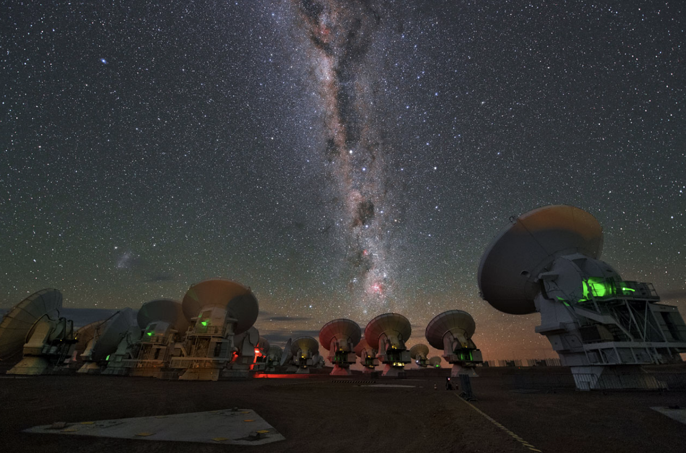

Forrige side

Velkommen til del 1D! Nesten all informasjon vi har om verdensrommet har vi fra stråling som kommer fra objektene. I denne forelesningen skal vi se nærmere på denne strålingen, hvilke prosesser som genererer den og hvordan vi kan få informasjon fra den. Noe har du kanskje vært borti allerede på videregående, som f.eks. sorte legemer, Wiens forskyvningslov og spektrallinjer? Her skal vi fordype oss videre i disse temaene og se både på litt teori men i stor grad på hvordan vi kan anvende det til å få informasjon om universet.
Er du klar?
Neste side